Insertion sort complexity
Now, let's see the time complexity of insertion sort in best case, average case, and in worst case.
We will also see the space complexity of the insertion sort.
We will also see the space complexity of bubble sort.
1. Time Complexity
Average Case :- O(n2)
Worst Case :- O(n2)
Now, let's see the working of insertion sort Algorithm.
To understand the working of the insertion sort algorithm,
let's take an unsorted array. It will be easier to understand the insertion sort via an example.
Let the elements of array are -
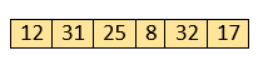
Initially, the first two elements are compared in insertion sort.
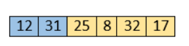
Here, 31 is greater than 12. That means both elements are already in ascending order. So, for now,
12 is stored in a sorted sub-array.
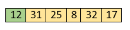
Now, move to the next two elements and compare them.
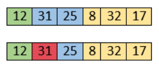
Here, 25 is smaller than 31. So, 31 is not at correct position. Now, swap 31 with 25. Along
with swapping, insertion sort will also check it with all elements in the sorted array..
For now, the sorted array has only one element, i.e. 12. So, 25 is greater than 12. Hence,
the sorted array remains sorted after swapping.
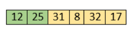
Now, two elements in the sorted array are 12 and 25. Move forward to the next elements that are 31 and 8.
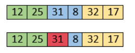
Both 31 and 8 are not sorted. So, swap them.
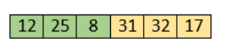
After swapping, elements 25 and 8 are unsorted.
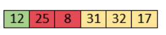
So, swap them.
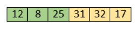
Now, elements 12 and 8 are unsorted.
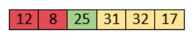
So, swap them too.
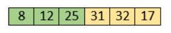
Now, the sorted array has three items that are 8, 12 and 25. Move to the next items that are 31 and 32.
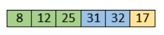
Hence, they are already sorted. Now, the sorted array includes 8, 12, 25 and 31.
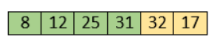
Move to the next elements that are 32 and 17.
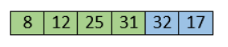
17 is smaller than 32. So, swap them.
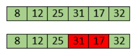
Swapping makes 31 and 17 unsorted. So, swap them too.
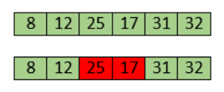
Now, swapping makes 25 and 17 unsorted. So, perform swapping again.
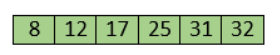
Now, the array is completely sorted.
Start Visualizer